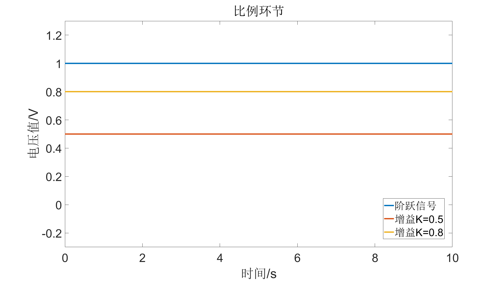
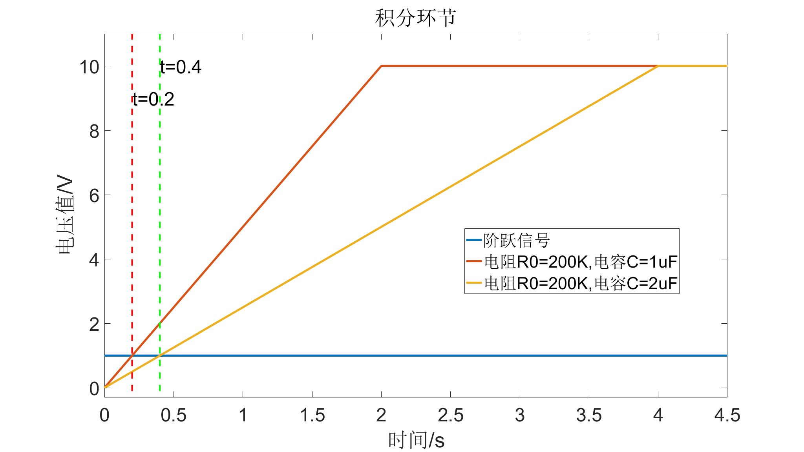
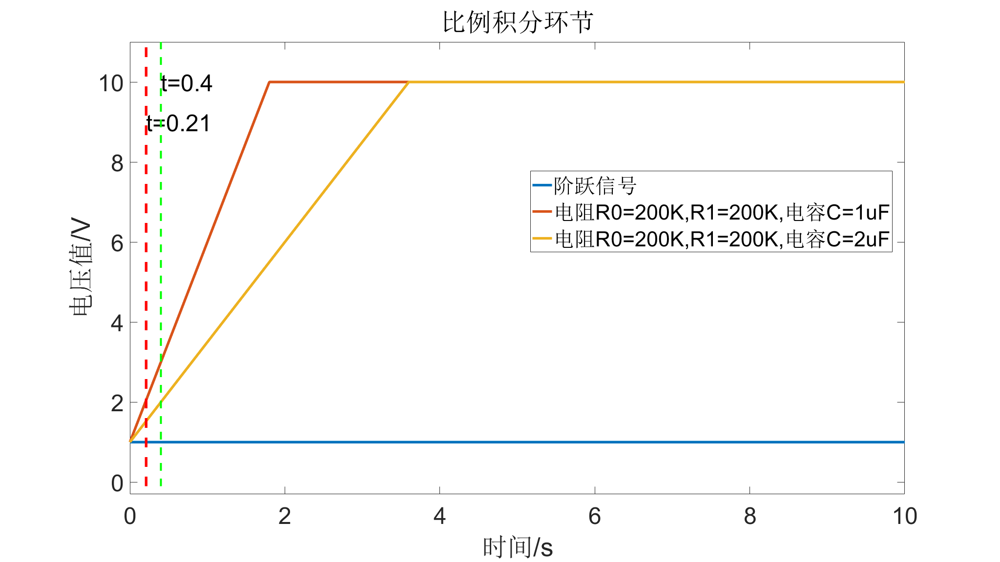
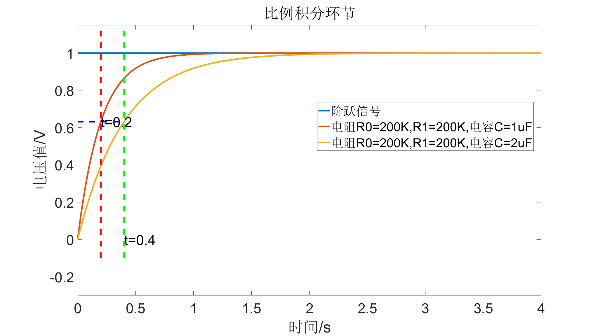
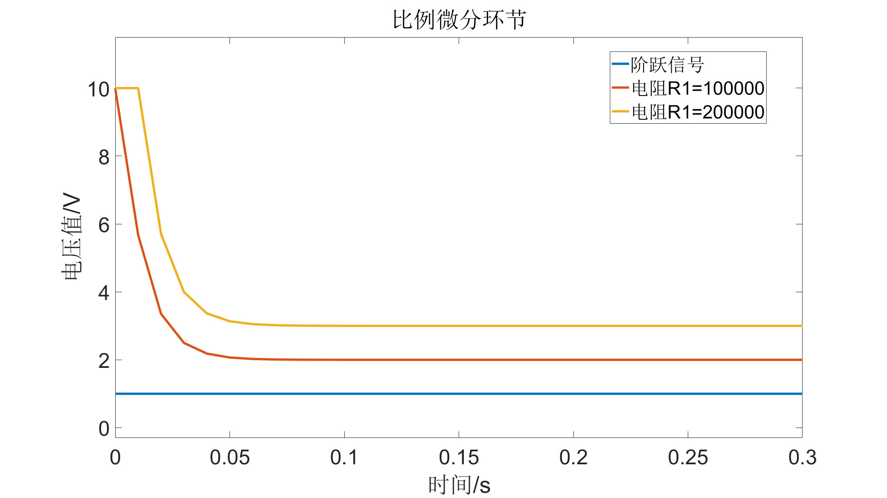
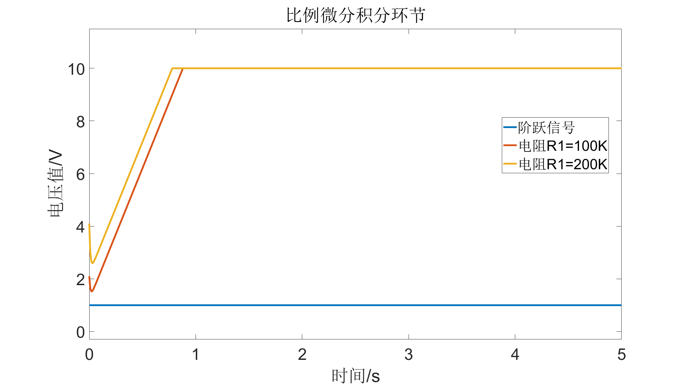

Contents
clc
clear
close all
张峰2022年05月28日编写
初始化参数
t=0:0.01:10; step_signal=ones(1,length(t)); line_width=4;
1 比例环节
k=[0.5,0.8]; % 增益 legend_str{1}='阶跃信号'; for i=1:length(k) s=tf(k(i),1); y(i,:)=step(s,t); legend_str{i+1}=strcat('增益K=',num2str(k(i))); end figure plot(t,step_signal,t,y,'LineWidth',line_width) legend(legend_str,'Location','best') xlabel('时间/s') ylabel('电压值/V') set(gca,'FontSize',36) set(gcf,'unit','normalized','position',[0.1,0.1,0.8,0.8]); ylim([-0.3,1.3]) title('比例环节')
2 积分环节
voltage_t=1; %求输出信号1v时的时间 saturated=10; % 饱和电压 R0=200*1e3; % R0的电阻值 C=[1e-6,2e-6]; % 电容值 legend_str{1}='阶跃信号'; for i=1:length(C) s=tf(1,[R0*C(i),0]); ytemp=step(s,t); t_saturated=find(ytemp>voltage_t); if length(t_saturated) t_satu=t_saturated(1); t_sat(i)=t_satu; ytemp(ytemp>=saturated)=saturated; end y(i,:)=ytemp; legend_str{i+1}=strcat('电阻R0=200K,电容C=',num2str(C(i)*1e6),'uF'); end figure plot(t,step_signal,t,y,'LineWidth',line_width) hold on t1_s=t(t_sat(1)); t2_s=t(t_sat(2)); plot([t1_s,t1_s],[-0.1,saturated+1],'r--','LineWidth',3) text(t1_s,saturated-1,strcat('t=',num2str(t1_s)),'Fontsize',36) plot([t2_s,t2_s],[-0.1,saturated+1],'g--','LineWidth',3) text(t2_s,saturated,strcat('t=',num2str(t2_s)),'Fontsize',36) legend(legend_str,'Location','best') xlabel('时间/s') ylabel('电压值/V') set(gca,'FontSize',36) set(gcf,'unit','normalized','position',[0.1,0.1,0.8,0.8]); xlim([0,4.5]) ylim([-0.3,11]) title('积分环节')
3 比例积分环节
voltage_t=2; %求输出信号1v时的时间 saturated=10; % 饱和电压 R0=200*1e3; % R0的电阻值 R1=200*1e3; % R0的电阻值 C=[1e-6,2e-6]; % 电容值 legend_str{1}='阶跃信号'; for i=1:length(C) s=tf([R1/R0*R0*C(i),1],[R0*C(i),0]); ytemp=step(s,t); t_saturated=find(ytemp>voltage_t); if length(t_saturated) t_satu=t_saturated(1); t_sat(i)=t_satu; ytemp(ytemp>=saturated)=saturated; end y(i,:)=ytemp; legend_str{i+1}=strcat('电阻R0=200K,R1=200K,电容C=',num2str(C(i)*1e6),'uF'); end figure plot(t,step_signal,t,y,'LineWidth',line_width) hold on t1_s=t(t_sat(1)); t2_s=t(t_sat(2)); plot([t1_s,t1_s],[-0.1,saturated+1],'r--','LineWidth',line_width) text(t1_s,saturated-1,strcat('t=',num2str(t1_s)),'Fontsize',36) plot([t2_s,t2_s],[-0.1,saturated+1],'g--','LineWidth',3) text(t2_s,saturated,strcat('t=',num2str(t2_s)),'Fontsize',36) legend(legend_str,'Location','best') xlabel('时间/s') ylabel('电压值/V') set(gca,'FontSize',36) set(gcf,'unit','normalized','position',[0.1,0.1,0.8,0.8]); ylim([-0.3,11]) title('比例积分环节')
4 比例积分
saturated=10; % 0.632电压 voltage_t=0.632; % 0.632电压 R0=200*1e3; % R0的电阻值 R1=200*1e3; % R0的电阻值 C=[1e-6,2e-6]; % 电容值 legend_str{1}='阶跃信号'; for i=1:length(C) s=tf(R1/R0,[R1*C(i),1]); ytemp=step(s,t); t_saturated=find(ytemp>voltage_t); if length(t_saturated) t_satu=t_saturated(1); t_sat(i)=t_satu; ytemp(ytemp>=saturated)=saturated; end y(i,:)=ytemp; legend_str{i+1}=strcat('电阻R0=200K,R1=200K,电容C=',num2str(C(i)*1e6),'uF'); end figure plot(t,step_signal,t,y,'LineWidth',line_width) hold on t1_s=t(t_sat(1)); t2_s=t(t_sat(2)); plot([t1_s,t1_s],[-0.1,saturated+1],'r--','LineWidth',line_width) text(t1_s,voltage_t,strcat('t=',num2str(t1_s)),'Fontsize',36) plot([t2_s,t2_s],[-0.1,saturated+1],'g--','LineWidth',line_width) text(t2_s,0,strcat('t=',num2str(t2_s)),'Fontsize',36) plot([-1,t2_s],[voltage_t,voltage_t],'b--','LineWidth',line_width) text(-1,voltage_t,strcat(num2str(voltage_t)),'Fontsize',36) legend(legend_str,'Location','best') xlabel('时间/s') ylabel('电压值/V') set(gca,'FontSize',36) set(gcf,'unit','normalized','position',[0.1,0.1,0.8,0.8]); y_in_max=max(step_signal); y_out_max=max(y(:)); y_max=max(y_in_max,y_out_max); xlim([0,4]) ylim([-0.3,1.15*y_max]) title('比例积分环节')
5 比例微分
saturated=10; % 0.632电压 R0=100*1e3; % R0的电阻值 R2=100*1e3; % R2的电阻值 R3=10*1e3; % R3的电阻值 C=1e-6; % 电容值 R1=[100*1e3,200*1e3]; % R1的电阻值 legend_str{1}='阶跃信号'; for i=1:length(R1) P=(R1(i)+R2)/R0; num = [R1(i)*R2*C, 0]; den = [R0*R3*C, R0]; G1= tf(num, den); G2= P+G1; ytemp=step(G2,t); ytemp(ytemp>=saturated)=saturated; y(i,:)=ytemp; legend_str{i+1}=strcat('电阻R1=',num2str(R1(i))); end figure plot(t,step_signal,t,y,'LineWidth',line_width) legend(legend_str,'Location','best') xlabel('时间/s') ylabel('电压值/V') set(gca,'FontSize',36) set(gcf,'unit','normalized','position',[0.1,0.1,0.8,0.8]); y_in_max=max(step_signal); y_out_max=max(y(:)); y_max=max(y_in_max,y_out_max); ylim([-0.3,1.15*y_max]) xlim([0,0.3]) title('比例微分环节')
5 比例积分微分
saturated=10; % 10v饱和电压 R0=100*1e3; % R0的电阻值 R2=10*1e3; % R2的电阻值 R3=10*1e3; % R3的电阻值 C1=1e-6; % 电容值 C2=1e-6; % 电容值 R1=[100*1e3,200*1e3]; % R1的电阻值 legend_str{1}='阶跃信号'; for i=1:length(R1) G1=R2/R0; num2 = [R1(i)*C1, 1]; den2 = [R0*C1, 0]; G2= tf(num2, den2); num3 = [R1(i)*R2*C1*C2, R2*C2,0]; den3 = [R0*R3*C1*C2,R0*C1,0]; G3= tf(num3, den3); G= G1+G2+G3; ytemp=step(G,t); ytemp(ytemp>=saturated)=saturated; y(i,:)=ytemp; legend_str{i+1}=strcat('电阻R1=',num2str(R1(i)/1000),'K'); end figure plot(t,step_signal,t,y,'LineWidth',line_width) legend(legend_str,'Location','best') xlabel('时间/s') ylabel('电压值/V') set(gca,'FontSize',36) set(gcf,'unit','normalized','position',[0.1,0.1,0.8,0.8]); y_in_max=max(step_signal); y_out_max=max(y(:)); y_max=max(y_in_max,y_out_max); ylim([-0.3,1.15*y_max]) xlim([0,5]) title('比例微分积分环节')